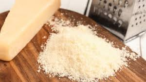

Fetucini Clásico a lo Alfredo

Ingredientes
- 340 gr. de fetuccine
- 90 gr. de mantequilla sin sal
- 150 ml. de nata de leche
- 1/2 cucharadita de sal
- Pimienta blanca molida
- Nuez moscada
- 90 gr. de queso parmesano rallado
- 2 cucharadas de perejil
- Ramita de perejil para adorno
Modo de Preparación
Paso 1: Cocer el fetuccine seco (de 6 a 8 minutos) hasta que esté "al dente". Sacarlo del fuego, escurrir bien y volver a colocarlo en la olla ya seca.
Paso 2: En una sartén, poner la mantequilla y la nata a fuego bajo. Cocer hasta que se derrita la mantequilla y se formen burbujas en la mezcla. Cocer un par de minutos más. Agregar sal, pimienta y nuez moscada. Sacar del fuego.
Paso 3: Poco a poco agregar el queso parmesano, revolviendo hasta que se homogenice y se vea listo. En caso de ser necesario, volver a calentar brevemente para que el queso quede bien unido (no dejar que se formen burbujas para que el queso no forme grumos y se ponga duro).
Paso 4: Verter la salsa encima de los fetuccine en la olla. Revolver con cuidado a fuego lento de 2 a 3 minutos hasta que quede bien mezclado. Espolvorear perejil picado y adornar con la ramita de perejil (si se desea). Servir inmediatamente.